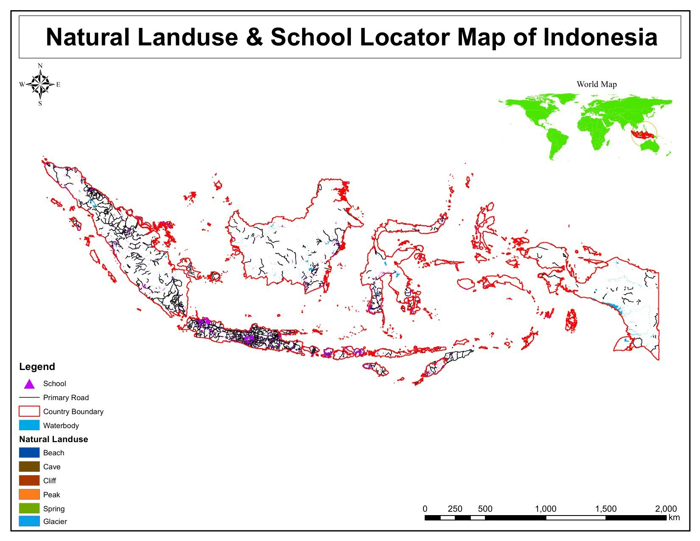
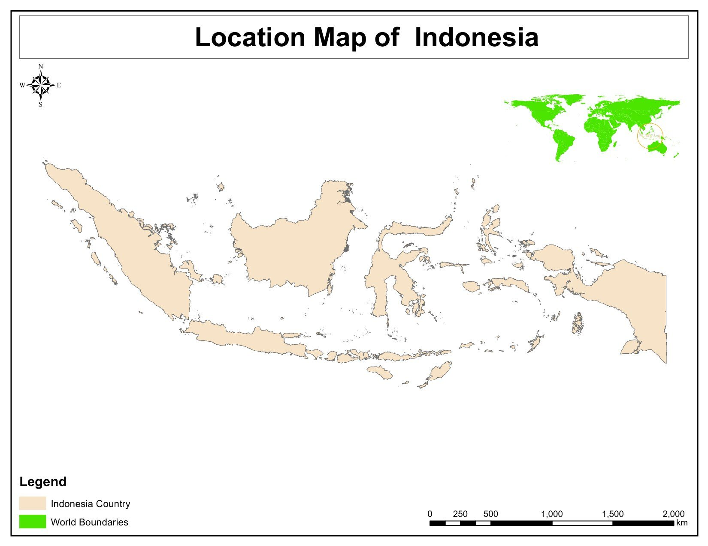

Cartography & Thematic Mapping
Land Use & School Locator Map: Wonosobo, Indonesia
Natural land-use map with school locations for Wonosobo, set within a national locator map of Indonesia.
- Location
- Wonosobo, Indonesia
- Year
- 2025
- Client
- Upwork client
- Tools
- ArcGIS Pro




Approach
- Land-use and school data
- District and national extents
- Layout with locator
Result
Two-map layout (national locator + district land use and schools).